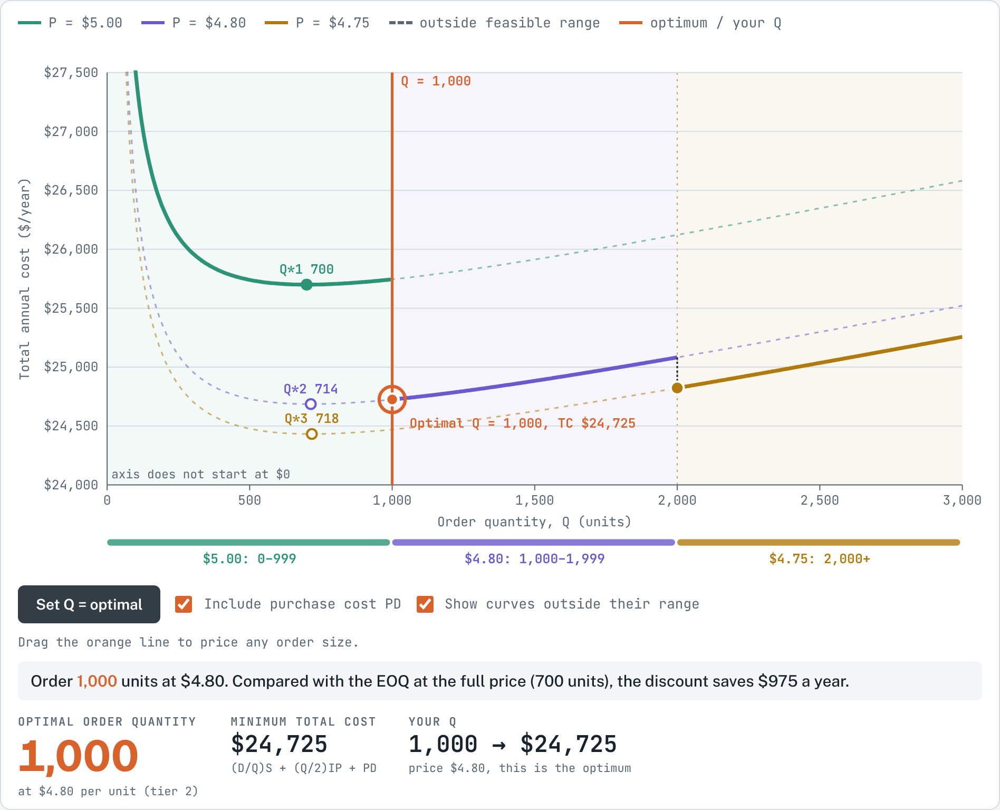
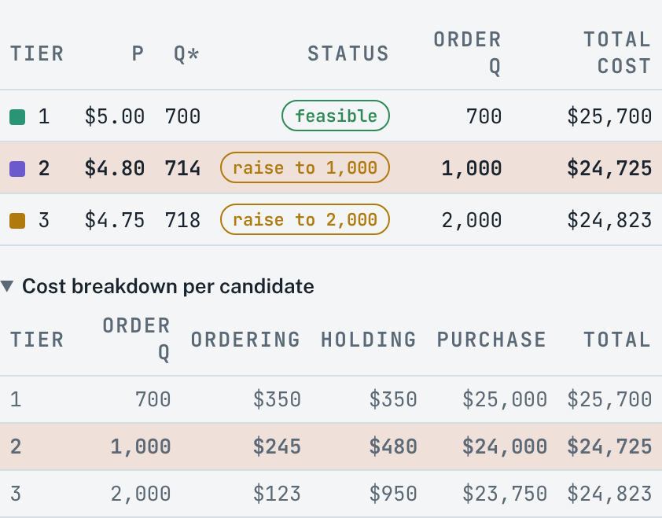
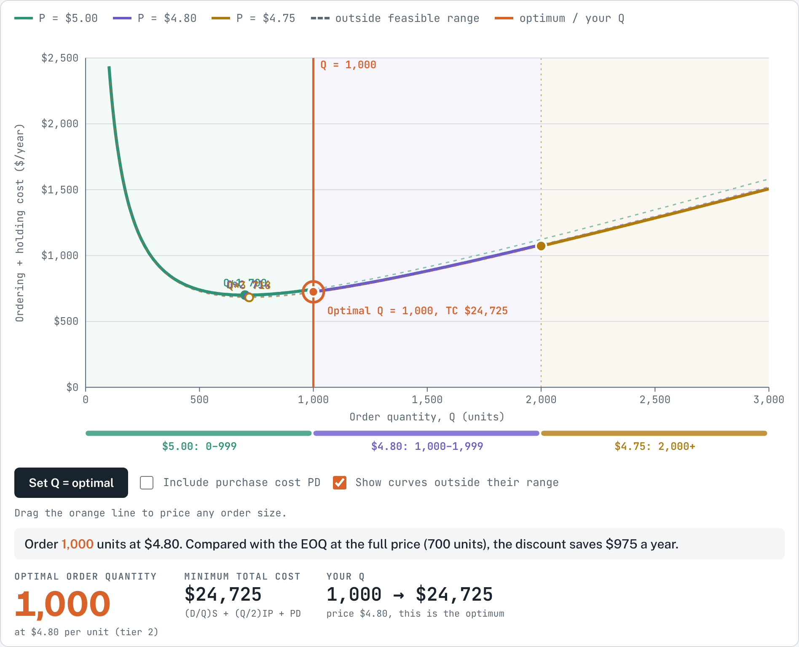
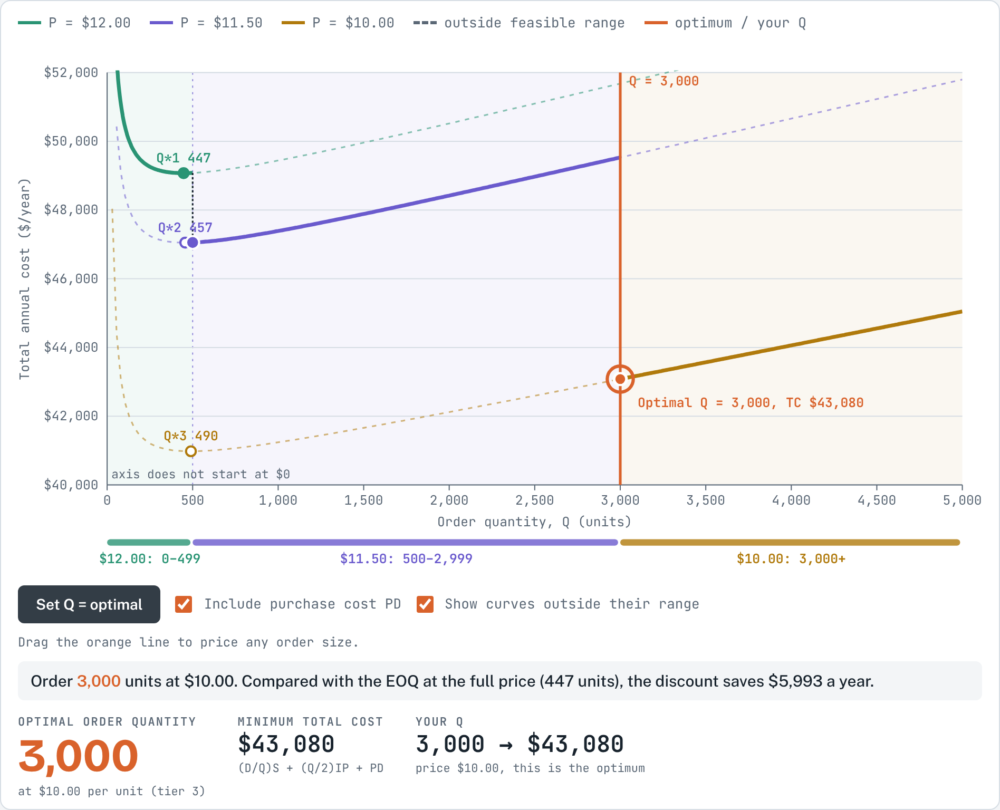

1About this simulation
Suppliers often offer a lower unit price when you buy more. A lower price saves money on every unit purchased, but earning it may require larger orders, and larger orders mean more stock on the shelf. The quantity discount model finds the order quantity that gives the lowest total annual cost of ordering, holding and purchasing.
This simulation draws one total cost curve for each price. Each curve only counts inside its feasible range, the order sizes that actually earn that price. You can change the demand and cost inputs, edit the price breaks and prices, drag your own order quantity along the curves and compare ready-made price scenarios.
After working through this guide, you should be able to:
- explain why each price has its own total cost curve, and why only part of each curve is feasible;
- apply the four-step procedure to find the optimal order quantity under quantity discounts;
- calculate the ordering, holding and purchase cost of each candidate order quantity;
- judge when a discount is worth taking, and explain the role of the purchase cost PD in that decision.
2Theory background
Assumptions
The model keeps the assumptions of the basic EOQ model (known and constant demand, constant lead time, instantaneous receipt, no stockouts) with one change: the unit price depends on the order quantity. Because the price changes with Q, the annual purchase cost P × D is no longer the same for every Q and must be part of the total cost. Holding cost is a percentage of the price, so a lower price also makes each unit cheaper to hold.
Notation
The notation is the same as in the course formula sheet.
| Symbol | Meaning |
|---|---|
| D | Annual demand (units/year) |
| S | Ordering or setup cost per order ($/order) |
| I | Holding cost as a percentage of the unit price per year |
| P | Unit price ($/unit), which depends on the order quantity |
| IP | Holding cost per unit per year at price P (H = I × P) |
| Q, Q* | Order quantity; EOQ for a given price |
| TC | Total annual cost of ordering, holding and purchasing |
Total cost with a price that depends on Q
For each price there is one total cost curve. A lower price moves the curve down (less purchase cost) and makes it slightly flatter on the right (less holding cost per unit), so its Q* lies a little further to the right. But a price is only paid for order quantities inside its range. The feasible total cost is therefore a stepped curve: it follows the curve of each price inside that price's range and drops at every price break.
The four-step procedure
- For each price, calculate Q* = √(2DS / IP).
- If Q* is too low to earn its price, raise it to the lowest quantity that earns the price (the break point). If Q* is above the range of its price, drop that price: a lower price is then available at a lower cost.
- Calculate the total annual cost TC at each remaining order quantity.
- Choose the order quantity with the lowest total cost.
Why raise Q* to the break point and not further? To the right of its Q*, each total cost curve rises, so the cheapest feasible point on that curve is the first quantity that earns the price.
Worked example (textbook scenario)
D = 5,000 units/year, S = $49/order, I = 20%. The supplier charges $5.00 for orders of 1 to 999 units, $4.80 for 1,000 to 1,999 units and $4.75 for 2,000 units or more.
| Price | Q* = √(2DS / IP) | Order Q | Ordering | Holding | Purchase | Total cost |
|---|---|---|---|---|---|---|
| $5.00 | 700 (feasible) | 700 | $350 | $350 | $25,000 | $25,700 |
| $4.80 | 714 (raise) | 1,000 | $245 | $480 | $24,000 | $24,725 |
| $4.75 | 718 (raise) | 2,000 | $122.50 | $950 | $23,750 | $24,822.50 |
The lowest total cost is $24,725 at Q = 1,000 units. Taking the $4.80 price saves $975 a year compared with the EOQ at the full price. The deeper $4.75 discount saves another $250 on purchases, but doubling the order adds $470 of holding cost and saves only $122.50 of ordering cost, so total cost rises by $97.50.
3How to use the simulation
Getting started
- Choose a Price scenario: the textbook example, a small discount that is not worth taking, a deep discount at a high break, or four price breaks.
- Set annual demand D, ordering cost S and the holding cost rate I with the sliders.
- Edit the Price tiers: the quantity at which each price starts and the price itself. Tier 1 always starts at 0, and breaks are sorted automatically. + Add price break adds a tier (up to four); ✕ removes one.
- Set Q = optimal moves the orange line to the optimum. Drag the orange line on the chart to price any order size.
- Untick Include purchase cost PD to see ordering plus holding cost only. Untick Show curves outside their range to see only the feasible stepped curve.
What you see

- Coloured curves: total cost for each price. The solid part is the feasible range; the dashed part shows what the curve would be if that price applied everywhere.
- Bands under the axis: the order sizes that earn each price.
- Q* markers: a filled dot means Q* is feasible; a hollow dot means Q* is too small and is raised to the break (filled dot at the break); a red ✕ means Q* is above the range and the price is dropped.
- Dotted black steps: the drop in total cost at each price break.
- Orange ring: the optimal order quantity. The sentence below the chart states the decision and the saving.

Try this
A. The textbook scenario
- Calculate Q* for each price by hand, decide which ones must be raised, and calculate the three total costs. Check your answers against the step table.
- Drag the orange line to Q = 999 and then to Q = 1,000. How much does total cost change in that one unit, and why?
B. Where does the saving come from?
- Untick Include purchase cost PD. Which order quantity now looks cheapest? Explain why the discounts only pay off once the purchase cost is included.

C. Changing the offer
- In the textbook scenario, lower the $4.75 price step by step. At about which price does ordering 2,000 units become the best choice?
- Select Small discount, not worth it. Why does the 1% discount at 2,000 units not pay off? How large would the discount need to be?
- Select Deep discount at a high break. Here the optimum is far above every Q*. What does this tell you about suppliers who offer large discounts for large orders?
- Select Four price breaks and find out why the cheapest price is not the best choice.

4Check your understanding
- D = 3,600 units/year, S = $50/order and I = 20%. The price is $10.00 for fewer than 500 units, $9.60 for 500 to 999 units and $9.40 for 1,000 units or more. Find the optimal order quantity and its total annual cost.
- Why is the purchase cost P × D included in the total cost here, while it is left out in the basic EOQ model?
- Why does Q* increase slightly when the price falls?
- In the four-step procedure, why can a price be dropped when its Q* lies above its feasible range?
- A supplier offers a large discount, but only for very large orders. Name two practical concerns, beyond the cost model, that a manager should consider before accepting it.
References
MSB255 Supply Chain and Operations Management: course materials. University of Stavanger.
Heizer, J., Render, B., & Munson, C. (2017). Operations Management: Sustainability and Supply Chain Management (12th ed.). Pearson.
Answers and expected resultsTry the exercises first, then open to check
Simulation results
| Run | Result |
|---|---|
| A1 Textbook | Q* = 700, 714, 718. Candidates 700, 1,000, 2,000 with TC $25,700, $24,725, $24,822.50. Optimal Q = 1,000. |
| A2 Q = 999 vs 1,000 | TC falls from about $25,744 to $24,725: one extra unit earns the $4.80 price on all 5,000 units, saving about $1,000 in purchase cost. |
| B Without PD | Ordering + holding: $700 at Q = 700, $725 at 1,000, $1,072.50 at 2,000. The full-price EOQ looks best; the $1,000 and $1,250 purchase savings are what make the discounts worthwhile. |
| C1 Lower $4.75 | TC at 2,000 = 122.50 + 5,200 × P. It beats $24,725 when P < about $4.73 (e.g. at $4.70, TC = $24,562.50). |
| C2 Small discount | D 2,000, S $40, I 25%: $10.00 → Q* = 253, TC $20,632; $9.90 at 2,000 → TC $22,315. The $200 purchase saving is far less than the extra $2,159 of holding cost. The price at 2,000 would have to fall below about $9.15 (a discount of more than 8.5%). |
| C3 Deep discount | Q* = 447, 457, 490; candidates 447, 500, 3,000 with TC $49,073, $47,055, $43,080. Optimal Q = 3,000: a big price cut can justify ordering far above the EOQ. |
| C4 Four breaks | Candidates 693, 800, 1,500, 4,000 with TC $32,693, $31,890, $31,273, $31,510. Optimal Q = 1,500; at 4,000 units the extra holding cost outweighs the $800 purchase saving. |
Check your understanding
- Q* = 424 ($10.00, feasible), 433 ($9.60, raise to 500), 438 ($9.40, raise to 1,000). TC = $36,848.53 at 424; $35,400 at 500 (360 + 480 + 34,560); $34,960 at 1,000 (180 + 940 + 33,840). Optimal Q = 1,000 with TC = $34,960.
- In the basic EOQ model the price is the same for every Q, so P × D is a constant that does not affect the choice. With quantity discounts the price, and so the purchase cost, changes with Q and must be compared.
- Holding cost per unit is I × P. A lower price lowers the holding cost per unit, and Q* = √(2DS / IP) rises when IP falls.
- Each lower price has a lower total cost curve and a larger Q*. If the Q* of a price lies above its range, the order quantity it points to already earns a lower price, which gives a lower cost. So the higher price can never be optimal.
- Examples: storage space and capital tied up; risk of obsolescence, damage or spoilage; cash flow; supplier reliability and quality; demand uncertainty, since large orders commit the firm for a long time.